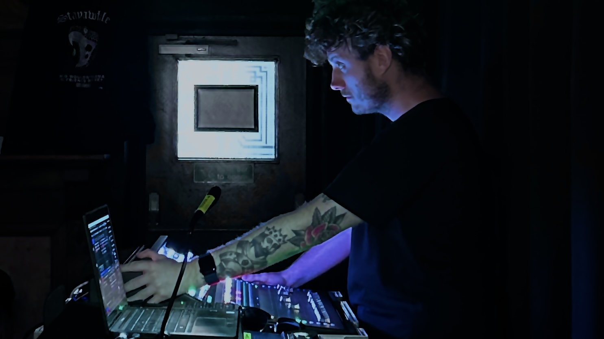

Birmingham · Available For Hire
Corporate AV · Rock & Roll · Broadcast
Delivering reliable audio for live, broadcast, and corporate events. Clients include Vodafone, BBC, Sky Sports and Iconic Auctioneers.

About Me
I'm Jack — a freelance Sound Engineer and AV Technician based in Birmingham. I specialise in live sound, broadcast, and corporate AV across festivals, conferences, and televised productions.
I've delivered projects for Vodafone, BBC Question Time, Premier League football broadcasts and Iconic Auctioneers, working alongside production companies including AT Comms, Aztec, Immersive AV, NEP Group, and Cloudbass.
My main focus is sound — FOH, monitors, broadcast, and corporate AV — but I've also developed a strong interest in AV networking: Dante routing, VLANs, and AV over IP, which helps me troubleshoot and improve reliability on complex productions.
What I Do
Front of House and monitor mixing across rock & roll, festivals, corporate events, and touring. Comfortable with high stage volumes, difficult acoustics, and demanding schedules.
Sound assist, boom op, and OB patching for televised productions including live sports, political debates, and broadcast events. Clean audio under pressure.
Conferences, breakout rooms, hybrid streaming, and theatre-style productions. Reliable operation, client communication, and polished delivery for high-profile brands.
EQ, system tuning, speaker alignment, delay management, and gain structure. Focused on getting rooms sounding right before the talent walks in.
Sennheiser and Shure multi-channel coordination, frequency planning, and IEM management for busy stages and high-RF environments.
Dante setup and troubleshooting in live environments, VLAN configuration, and AV over IP. Practical experience integrating IT and AV systems on productions.
Portfolio
Toolkit
Consoles I work with confidently
Networking & Systems
Core Sound Skills
Available for live events, broadcast productions, and corporate AV. Send a Teamtrack link or just say hello — I'll get back to you quickly.